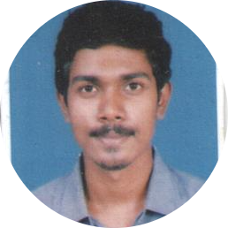

|  |
Siddesh BhosleCurrently working at Sutherland as a Customer Support Representative for client Netflix Previously had worked with Conneqt (Tata Business Support Services) Make optimum utilization of my knowledge and skills in Technology, utilize opportunities effectively for professional growth and to contribute in the best possible way for the betterment of the organization and self. |
Education: |
Skills and Languages: |
||||
|---|---|---|---|---|---|
|
Java, Python, PHP-MySQL, HTML, CSS, Asp.Net, Microsoft Word, Excel, PowerPoint, Tally Erp9. |
Title: Garage Locator (Android App).
Front End: XML (UI), Java [Android Studio]
Back End: PHP and WAMP Server (MySQL).
Description : An Android Application .Objective of this project is to locate garage and workshops for common man. The application was made to locate the garage address offline from the device. The project was a dummy application. The project took several weeks of time to work properly. The project was totally designed in the Android Studio. The project in all total had 23-Front-end scripts and more than 15-Back-end scripts.
Current Focus: |
Travelling: |
Language: |
Interests & Hobbies: |
|---|---|---|---|
|
An Industrial visit to a Company in Jaipur. The company was basically into creating GPS tracking devices for Cab-services, Transport vehicles, etc. The company gave a vast idea on creating a tracker device and locating the vehicle and the working of each component in the device in detailed manner. |
|
|